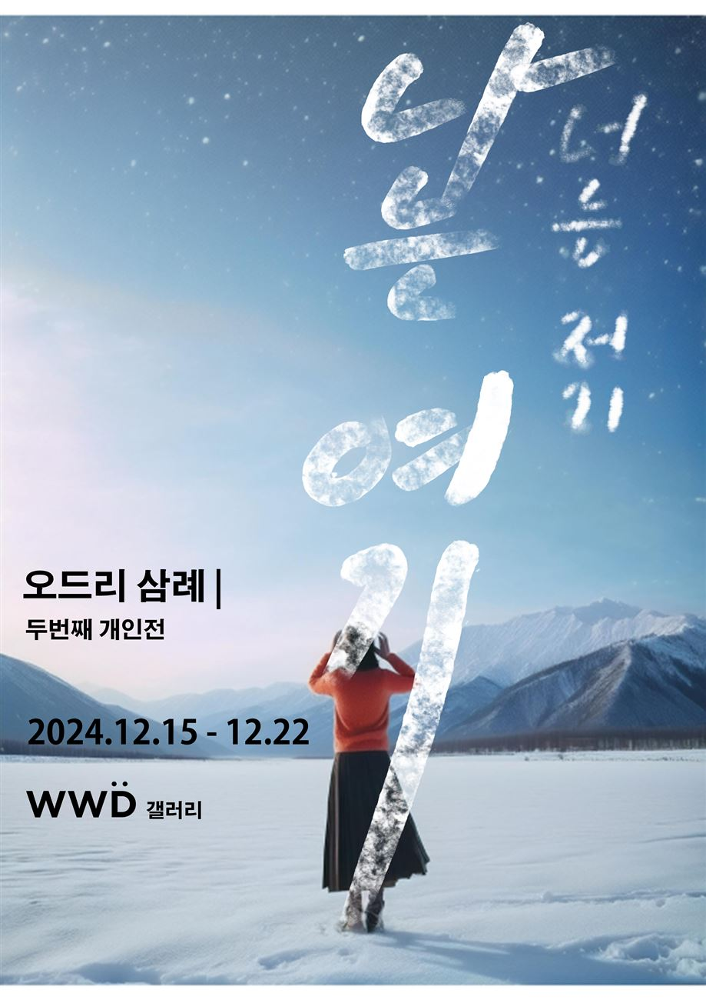
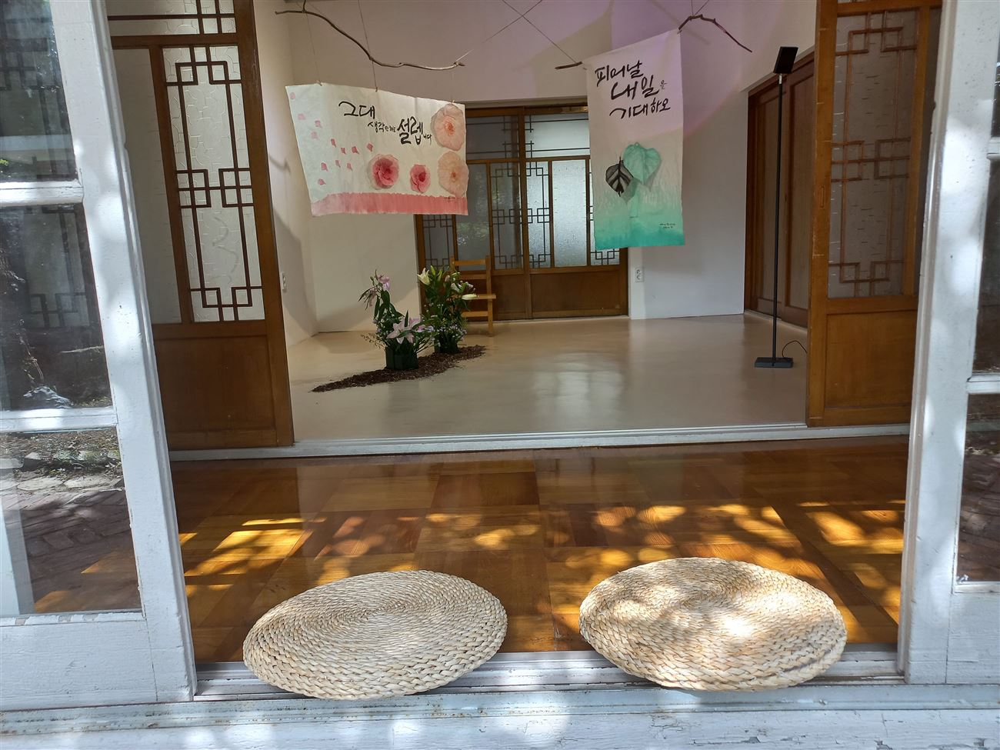
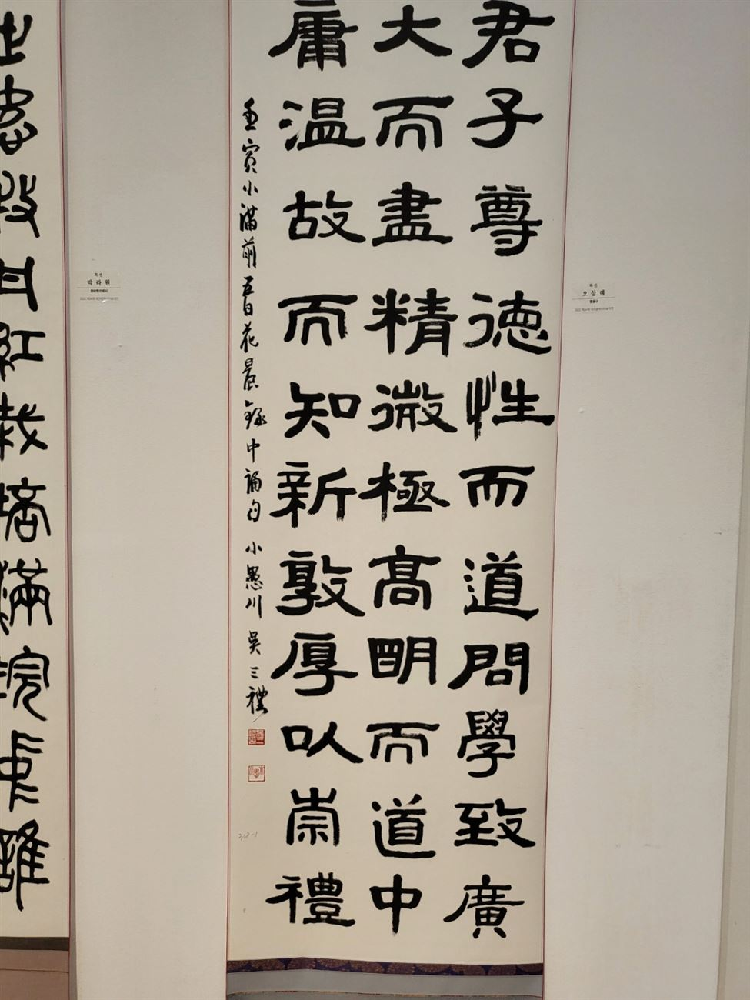
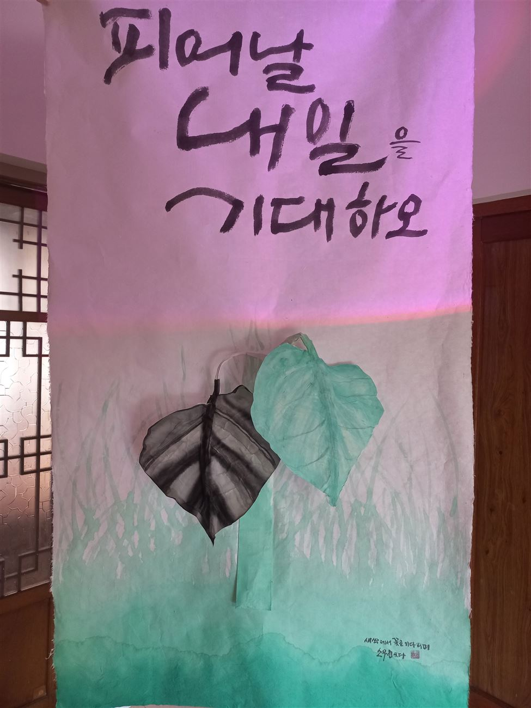
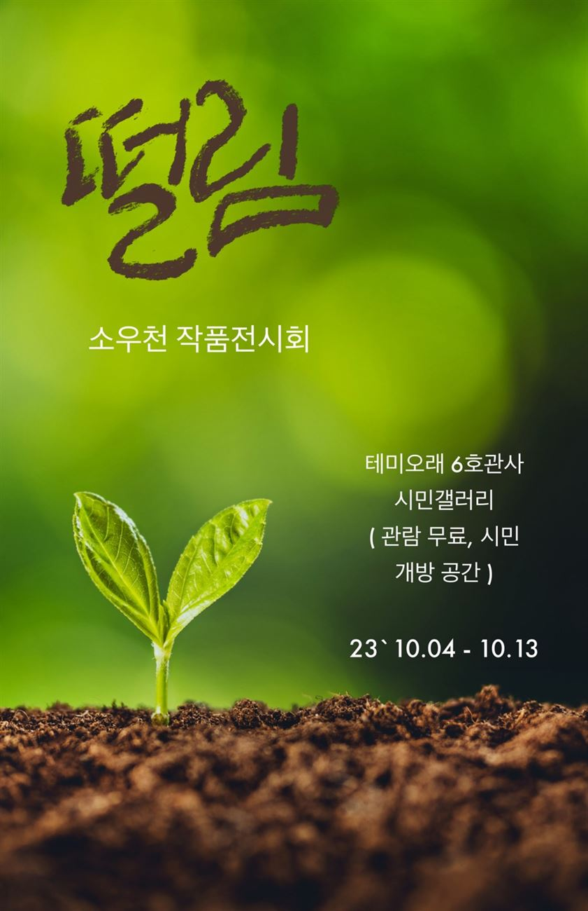
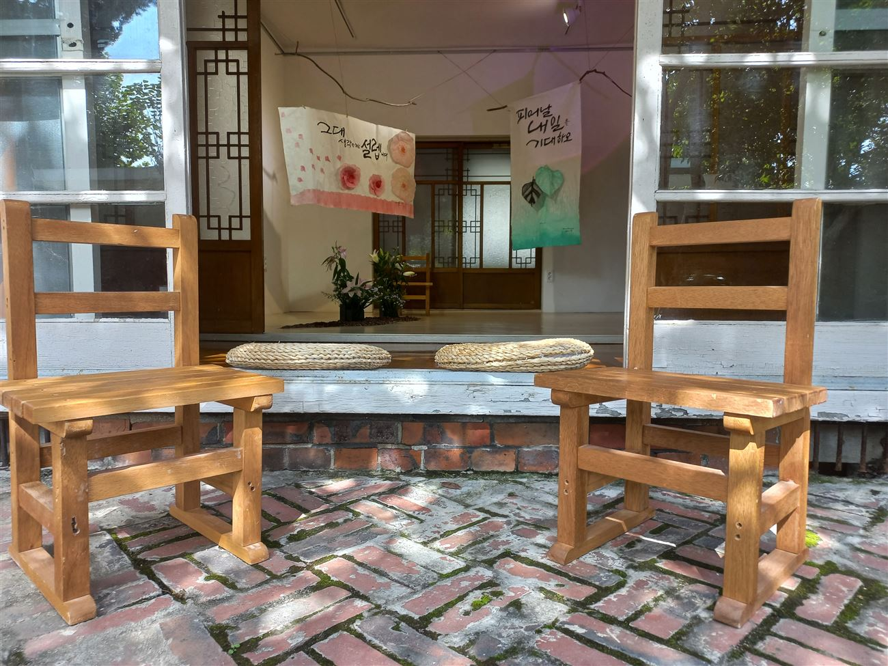
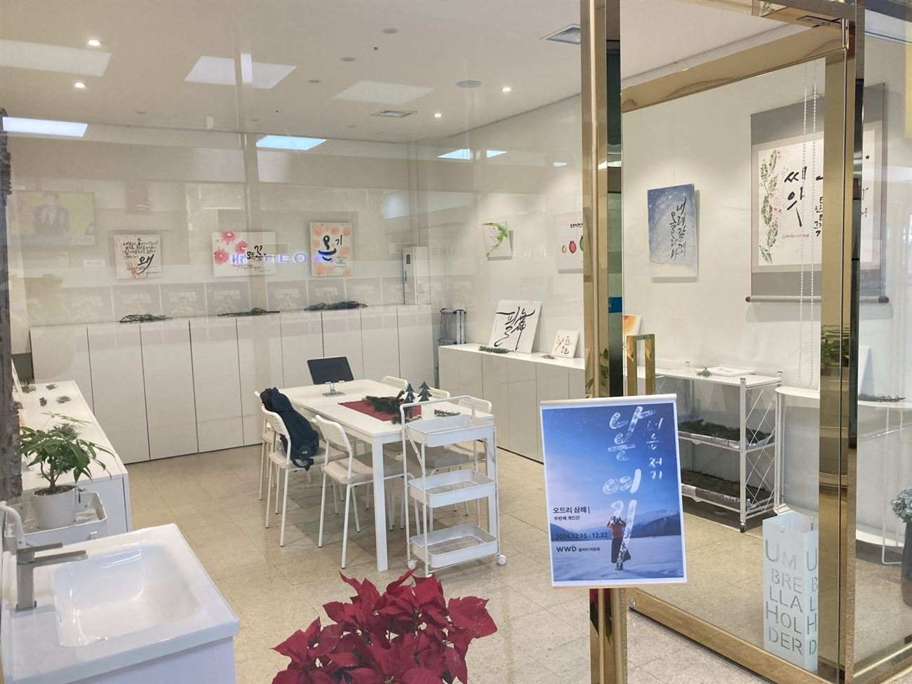

2nd SOLO · 2024
너는 저기, 나는 여기
“흐르는 강물처럼 수없이 많은 봄·여름·가을·겨울, 기억 저편의 흔적들을 나는 지금 여기에 떠나보내려 한다.”
2024.12.15 – 12.22 · WWD 갤러리 어은점, 대전
기획 · 디자인 · 설치 양승진

Oh Sam Lye · 소우천
서예 · 소우천 小愚川
캘리그라피 · 오드리삼례쓰다
한문 · 한자 교육자
캘리그라피는 점, 선, 면, 여백조차도 희·노·애·락이 깃든 살아 있는 인생관을 담고 있다.
작가 노트, 두 번째 개인전 「너는 저기, 나는 여기」(2024)
Artist
오삼례는 대전에서 활동하는 서예가이자 캘리그라피 작가다. 서예에는 호 소우천(小愚川)을 쓰고, 캘리그라피는 작가명 오드리삼례로 발표한다. 첫 개인전 「떨림」(2023)의 캘리그라피에는 ‘소우천 쓰다’로 서명했다. 예서로 『중용』의 문장과 선사의 시를 쓰고, 한지 위에 꽃과 잎을 번지듯 올린 캘리그라피로 일상의 문장을 쓴다. 2023년 첫 개인전 「떨림」을 열며 캘리그라퍼로서 전문 작가 활동을 시작했다. 2017년부터 대전광역시미술대전과 대전여성미술대전에서 입선과 특선을 이어 받았고, 2024년부터는 충청서도대전 캘리그라피 부문에서 입선과 특선(2026)을 받았다. 2022년 한국미술협회 대전광역시지회 서예부문 작가로 선정되었다. 대전미술협회 초대작가로 활동하며, 초등학교 방과후 한자반과 대전시민대학에서 한자·한문을 가르친다.
Oh Sam Lye is a calligrapher based in Daejeon, Korea. She signs her classical brush works as Sowoocheon (小愚川) and her Korean calligraphy as Odri Samlye. She writes classical Chinese texts in clerical script, and Korean calligraphy on hanji with washes of flowers and leaves. She began working professionally as a calligraphy artist in 2023 with her first solo show. Awarded fifteen times since 2017 at the Daejeon Art Exhibition, the Daejeon Women's Art Exhibition and the Chungcheong Calligraphy Exhibition, she is an invited artist of the Daejeon Art Association and teaches Hanja and classical Chinese at after-school classes and the Daejeon Citizens' University.
서예 · Sowoocheon
고전의 문장을 예서로 쓰다

君子尊德性而道問學… 예서로 쓴 『중용』의 문장.
캘리그라피 · Odri Samlye
한지 위에 꽃과 문장을 쓰다. 2023년 「떨림」 작품에는 ‘소우천 쓰다’로, 2025년 이후 작품에는 ‘오드리삼례’로 서명했다.

한지에 먹과 채색. 천장에서 내려 건 설치.
Solo Exhibitions

2nd SOLO · 2024
“흐르는 강물처럼 수없이 많은 봄·여름·가을·겨울, 기억 저편의 흔적들을 나는 지금 여기에 떠나보내려 한다.”
2024.12.15 – 12.22 · WWD 갤러리 어은점, 대전
기획 · 디자인 · 설치 양승진

1st SOLO · 2023
옛 도지사 관사촌 테미오래의 마루와 방에 한지 캘리그라피를 걸었다. 꽃과 잎을 번지게 한 작품들을 마른 가지에 매달거나 천장에서 내려 설치했다.
2023.10.04 – 10.13 · 테미오래 6호관사 테미갤러리, 대전
기획 · 설치 양승진


CV
2026년 11월 정리
Work With
가훈, 좌우명, 개업 · 기념일의 한 문장을 서예나 캘리그라피 작품으로 씁니다. 한지, 족자, 액자 중에서 고를 수 있습니다.
기관, 도서관, 문화센터를 위한 원데이 클래스와 정규 강좌.
초등학교 방과후 한자반과 성인 대상 한자 · 한문 강좌. 교재와 교구를 직접 구성합니다.
Contact
아래 글을 복사해 빈칸을 채운 뒤 인스타그램 DM이나 메일로 보내 주세요. 기획사 아우름이 받아 작가에게 전합니다.
[오드리삼례 작가 문의] 종류: 문구 작품 / 수업 · 강의 / 전시 원하는 문구 또는 수업 내용: 희망 시기: 예산 범위: 연락처:
41aurum@gmail.com